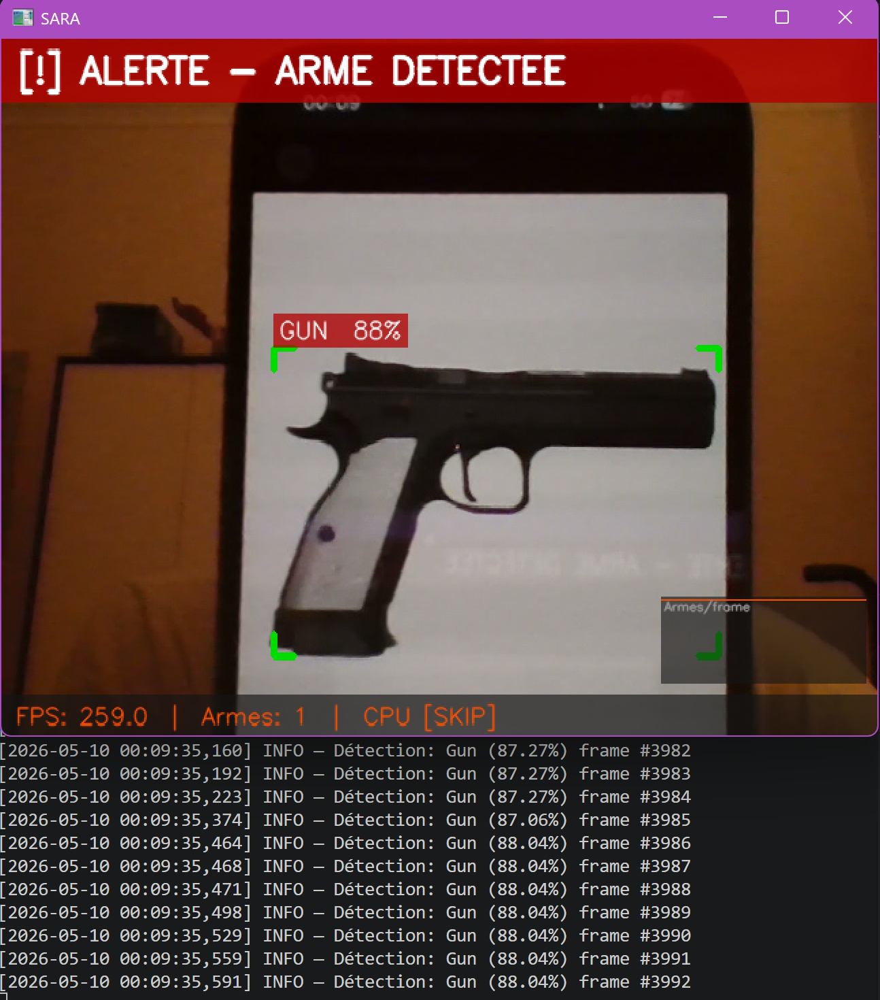
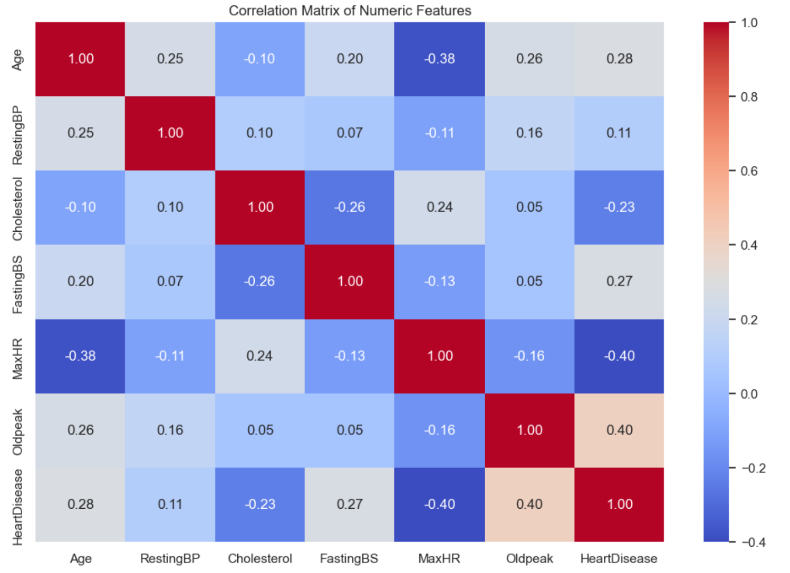
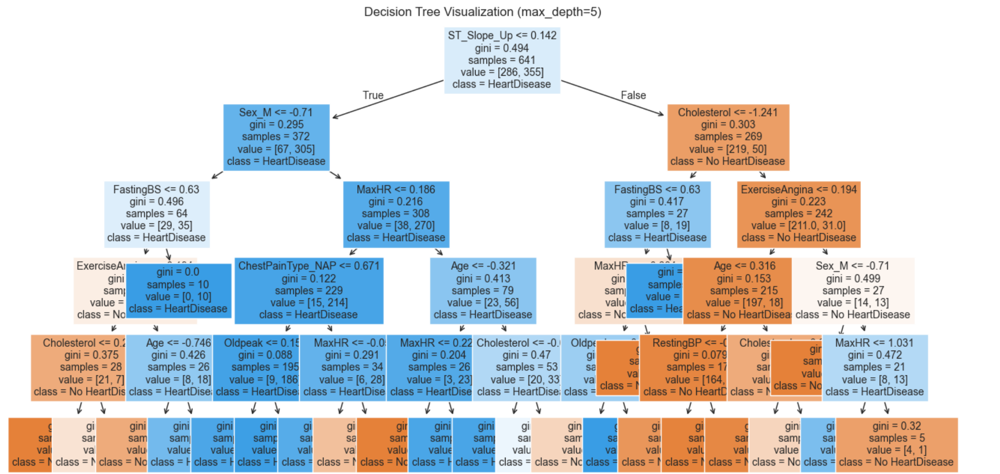
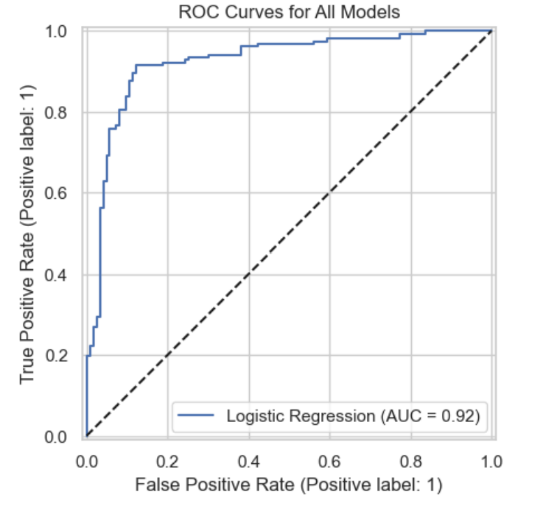
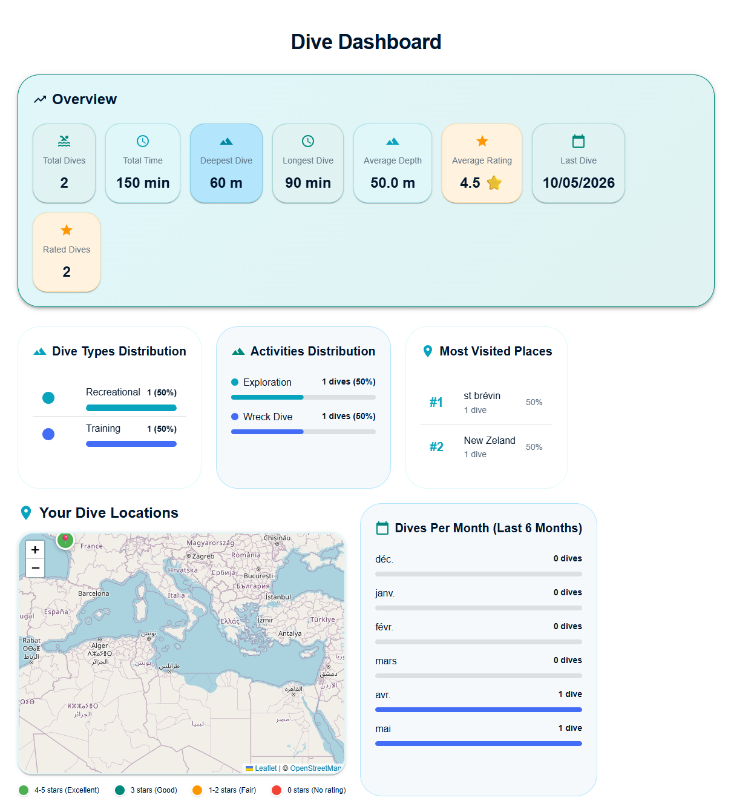

Réalisations
Mes Projets

2026SARA - Système Autonome de Reconnaissance d'Armes
Contexte
Détection d'armes en temps réel via YOLOv8. Projet avancé intégrant CV, backend robuste et déploiement edge.
Objectifs
- Entraîner un modèle YOLOv8 avec mAP50 > 85%
- Déployer en temps réel sur CPU/GPU/Raspberry Pi
- Construire une API REST avec webhooks HMAC
- Exporter en ONNX pour l'edge computing
Résultats
mAP50 = 89%, fonctionne hors-ligne, dashboard web temps réel, intégration avec caméra IP



Heart Disease Prediction
Contexte
Modèle de classification pour prédire les risques de maladie cardiaque, en comparant trois algorithmes : Decision Tree, k-NN et Logistic Regression.
Approche
- Analyse exploratoire des données et visualisations
- Comparaison de 3 algorithmes de classification
- Évaluation avec matrices de confusion et métriques

2025DiveLog
Contexte
Application web de journalisation de plongées avec cartographie interactive et gestion d'utilisateurs. Interface complète full-stack.
Fonctionnalités
- Journalisation complète des plongées
- Cartographie interactive des sites
- Gestion multi-utilisateur
- Architecture full-stack moderne
2024
Run Rover
Contexte
Algorithme d'optimisation du déplacement d'un rover martien. Implémentation de structures de données avancées pour la navigation intelligente.
Objectifs
- Optimiser la trajectoire de déplacement
- Implémenter des structures de données avancées
- Algorithmes de navigation intelligente
- Performance optimale en environnement contraint